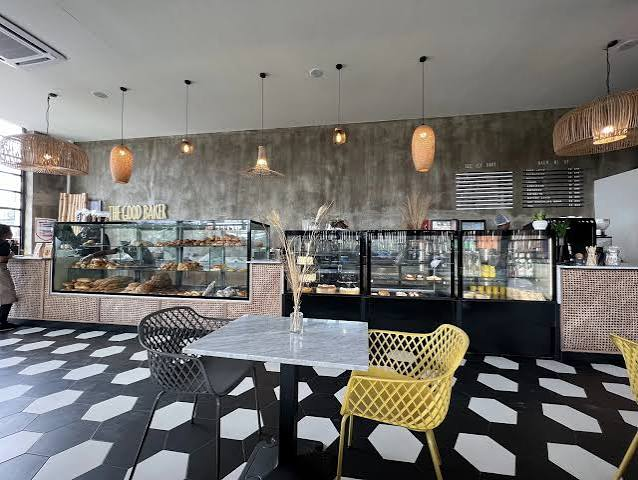

Rated 4.4 stars on Google
Our Story
Baked fresh,
loved across Accra
The Good Baker started as a single counter on Garden Street in East Legon and has grown into one of Accra's best loved bakery cafes, now also serving Oyarifa and Lashibi. Every morning the ovens turn out sourdough loaves, cinnamon rolls and flaky almond croissants, while the coffee bar keeps pace with fresh juice and power shots.
Regulars come for the wild salmon scramble and egg in a hole at breakfast, then come back for a slice of homemade cake in the afternoon. Free WiFi, comfortable group seating and a shaded outdoor patio make it just as easy to stay a while.
Artisan Bread
Fresh Pastries
Coffee Bar
Breakfast & Brunch
Homemade Cakes